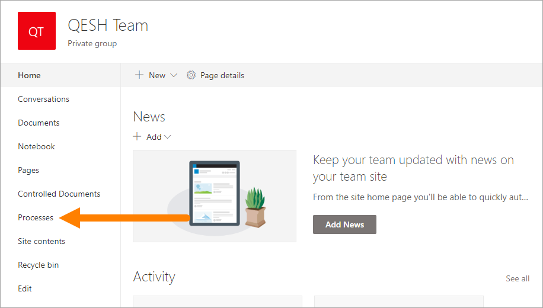
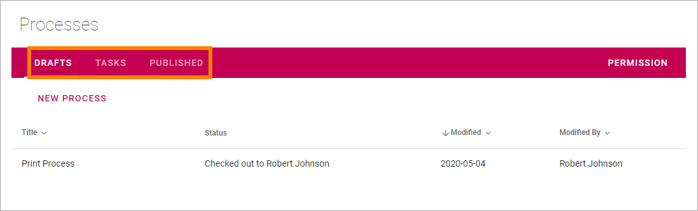

Authoring processes¶
This section is for Authors of processes. The work always take place in a Processes Library in a Team Site. Who is allowed to author and approve (if approval is needed) is set up in Omnia Admin under Process Management.
When a Team Site has been set up for process authoring, the following will be available for authors:
- A Processes library that only users that has the right permissions can work with.
- A Publish Workflow.
- A Tasks list.
- Process History for the published editions.
- Options for relating to documents; controlled documents or “normal” documents.
- Options for creating a new draft from a published process.
- Options for unpublishing a process.
In a Team Site set up for process authoring, a library, usually called just “Processes”, is available here:
In the Procsses library, authors can find three tabs:
“Drafts” is used when creating and editing drafts for new processes or when updating an existing process for a new edition.
“Tasks” is a list of author tasks for the processes – tasks you have assigned to colleagues or tasks assigned to you.
When a process is published (approved for publication) it is removed from “Drafts” and is available on the “Published” tab. Here the options for creating a new draft, unpublishing and process history are available, see: Working with Published processes.
Most headings can be used to sort a list.
Select section for more information:
- Working with draft processes
- Creating a draft process
- Using the workspace for processes
- The Drawing tab - authoring processes
- The Content tab - authoring processes
- The Documents tab - authoring processes
- The Links tab - authoring processes
- The Tasks tab - authoring processes
- Edit properties when authoring processes
- Create a new draft from a published process
- Save, check in or discard changes - authoring processes
- Preview a process - authoring processes
- Edit a process
- Delete a draft process
- Working with published processes
- Working with tasks when authoring processes
- Publish - the approval workflow for processes